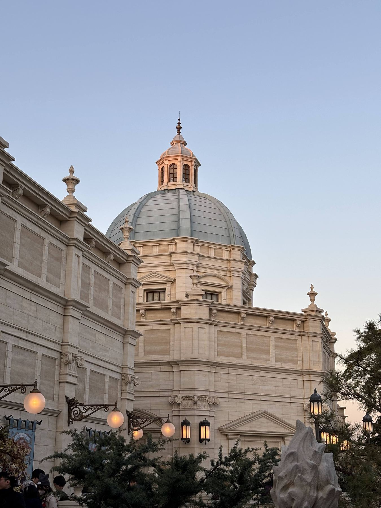
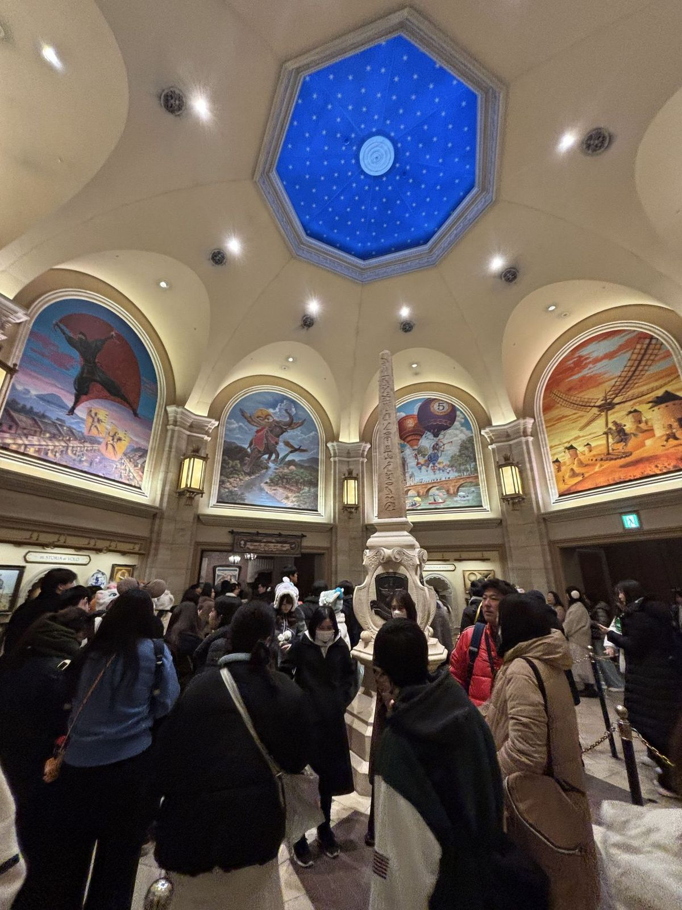

メディテレーニアンハーバーのなだらかな丘の上に建つ、美しいルネサンス様式の博物館「ファンタスティック・フライト・ミュージアム」。世界中のパークに存在する大人気アトラクション「ソアリン」ですが、ここ東京ディズニーシー（TDS）のものは、世界で最も重厚な「歴史ロマンと魔法」のストーリーが散りばめられています。
海外版の「現代的な空港やハンググライダー」というSFな設定から、TDS版は「19世紀を舞台にした飛行への情熱と、イマジネーションの旅」というエモーショナルな物語へ180度、驚異的なリビルドが行われました。
| 比較項目 | 海外パーク（米国・上海） | 東京ディズニーシー（日本） |
|---|---|---|
| 舞台設定 | 現代的なハンググライダーツアー | 19世紀の飛行博物館 |
| 飛行具 | アルミと金属の工業グライダー | 木と布とハヤブサが織りなす「ドリームフライヤー」 |
| 案内人 | パトリック（現代の客室乗務員） | カメリア・ファルコ（19世紀の女性飛行家） |
TDSのソアリンに隠された最大のミステリー。それは、カメリア・ファルコと、あの『タワー・オブ・テラー』の主人公「ハリソン・ハイタワー三世」とのドロドロとした関係性です。二人は1538年創設の歴史ある探検家学会「S.E.A.」において、19世紀の再興期を共に支えたメンバーでしたが、その思想は「光と影」のように正反対でした。
カメリアは「空を飛ぶ夢を、世界中の多くの人と分かち合いたい」と願った優しき女性。対して、強欲なハイタワー三世は「世界で偉大なのは自分だけ」と考え、手に入れた宝をホテルに独占・隠匿しました。ファンの間では、ハイタワー三世がカメリアの「ドリームフライヤーの設計図」や博物館のコレクションに目をつけ、S.E.A.の内部で激しく対立していたと考察されています。
博物館のロビーに飾られたS.E.A.の大きな集合写真には、誇らしげに座る若きカメリアと、そのすぐ近くで傲慢な顔をして映るハイタワー三世의姿が描かれています。カメリアは彼の強欲な思想に決して屈せず、純粋な情熱でこの博物館を守り抜きました。この二人の対立を知ると、ソアリンの美しさと、タワー・オブ・テラーの恐ろしさが、ひとつの歴史として重厚に繋がります。
メディテレーニアンハーバーというイタリアの地でありながら、この博物館には日本の近代化（明治維新）の歴史が美しく絡んでいます。博物館の中には、カメリアが晩年（1872年、当時71歳）に、日本から訪れた使節団を迎えて挨拶をしている絵画が飾られています。
この絵画に描かれている日本の紳士たちは、実在した「岩倉使節団」（岩倉具視や木戸孝允、伊藤博文、大久保利通など）です。ヨーロッパの優れた技術を学びに来ていた彼らは、カメリアの飛行への狂熱的な情熱とドリームフライヤーに深い感銘を受けました。そして彼らが日本に持ち帰った「空への夢」のバトンが巡り巡って、現代の私たちがこの地でドリームフライヤーに出会えるという、鳥肌が立つような時空を超えた歴史の伏線が張られているのです。
博物館の奥へと進むと広がる、息を呑むほどに美しい大天井のドーム型ロビー。ここには、カメリアの父チェザーレ・ファルコが世界中で集め、描いた「人類が太古より夢見た空への歴史画」が、東洋から西洋、中東の神話に至るまで、ドームを囲むように飾られています。

壁画をよく見ると、神話に登場する「空飛ぶカーペット」や「翼を持った馬（ペガサス）」、ダ・ヴィンチの飛行設計図、さらには空を飛ぼうとする「ゾウ」や「ライオン」の姿など、人類が抱いた空への憧れがユーモアと芸術性たっぷりに描き込まれています。このロビーで、頭上の美しい青空の天井画を見上げながら、世界中の歴史や魔法を感じる時間こそが、私たちの「イマジネーション（想像力）」を高め、次の部屋でドリームフライヤーを起動するための最も重要なプロローグなのです。
カメリアの肖像画が飾られた「特別回顧室」で、白黒の絵から彼女が立体的に動き出すあの瞬間。ここにはイマジニアによる驚異的な最新プロジェクションマッピング技術が使われています。単に動画を絵の上に写すのではなく、「油絵のキャンバスに描かれた独特の絵の具の凹凸や筆跡（キャンバスの質感）」を完璧に維持したまま、彼女のスピリットを美しく動かしているのです。
また、彼女が放った愛鳥ハヤブサ「アレッタ」の影が天井を飛び回る演出では、立体的なサラウンド音響と同期させることで、本当にハヤブサの風が頭上を駆け抜けるような「リアルな気配」を五感に訴えかけています。すべては、科学ではなく、ゲストの「想像力」という名の魔法を信じさせるための、緻密な計算の結晶なのです。
最終編集日：